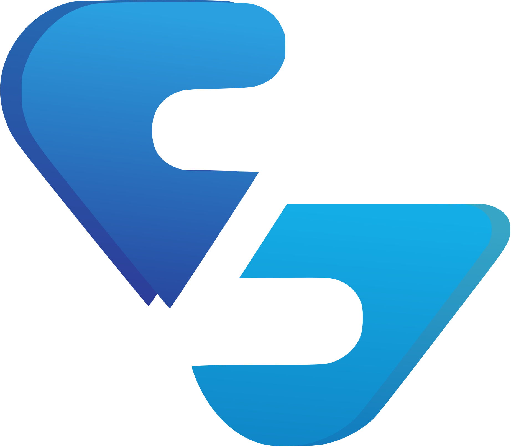
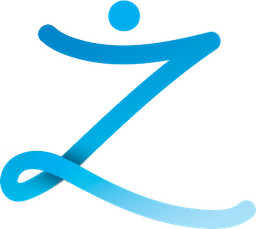

The same brand, explored two ways. Open a card to walk through the full identity, symbol, color, type, and applications, then come back and compare.

Two blades that lean into each other, forming a Z and a figure with open arms.
View this direction →
A single person, arms open, lifted by the people around them.
View this direction →Each direction is a full, independent identity showcase — pick either one to start.